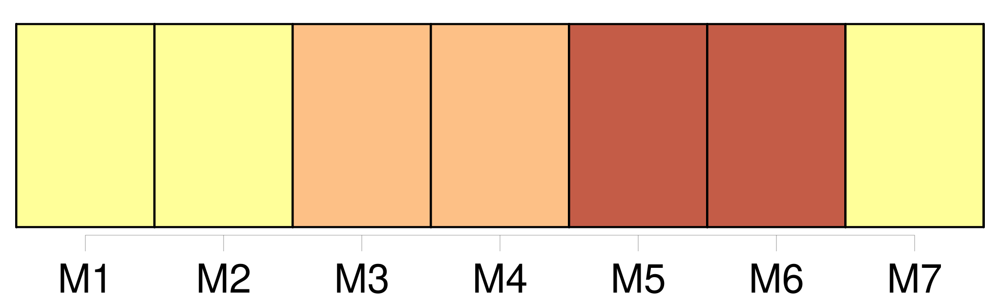

Longueur nb maillons : 23 mentions |
  |
[Les condamnations par contumace] n'emporteront la mort civile qu'après les cinq années qui suivront l'exécution du jugement par effigie et pendant, lesquelles le condamné peut se représenter. [1 phrases]
[Les condamnés par contumace] seront, pendant les cinq ans, ou jusqu'à ce qu' [ils] se représentent ou qu' [ils] soient arrêtés pendant ce délai privés de l'exercice des droits civils.
[Leurs] biens seront administrés et [leurs] droits exercés de même que ceux des absens. [1 phrases]
Lorsque [le condamné par contumace] se présentera volontairement dans les cinq années, à compter du jour de l'exécution, ou lorsqu' [il] aura été saisi et constitué prisonnier dans ce délai, le jugement sera anéanti de plein droit ; [l'accusé] sera remis en possession de [ses] biens [il] sera jugé de nouveau ; et si, par ce nouveau jugement, [il] est condamné à la même peine ou à une peine différente emportant également la mort civile, elle n'aura lieu qu'à compter du jour de l'exécution du second jugement. [1 phrases]
Lorsque [le condamné par contumace] , [qui] ne se sera représenté ou [qui] n'aura été constitué prisonnier qu'après les cinq ans, sera absous par le nouveau jugement, ou n'aura été condamné qu'à une peine qui n'emportera pas la mort civile, [il] rentrera dans la plénitude de [ses] droits civils, pour l'avenir, et à compter du jour où [il] aura reparu en justice mais le premier jugement conservera, pour le passé, les effets que la mort civile avait produits dans l'intervalle écoulé depuis l'époque de l'expiration des cinq ans jusqu'au jour de [sa] comparution en justice. [1 phrases] Si [le condamné par contumace] meurt dans le délai de grâce des cinq années sans s'être représenté, ou sans avoir été saisi ou arrêté, [il] sera réputé mort dans l'intégrité de [ses] droits.
Le jugement de contumace sera anéanti de plein droit sans préjudice néanmoins de l'action de la partie civile, laquelle ne pourra être intentée contre les héritiers du [condamné] que par la voie civile. |
La ressource peut être téléchargée sur la page Ortolang
Si vous avez des questions ou vous voyez des erreurs, merci d'envoyer un mail à silvia.federzoni89@gmail.com
Site développé par S. Federzoni (contact)